Cruzeiro
Clube atual
5 jogos · 1 gols
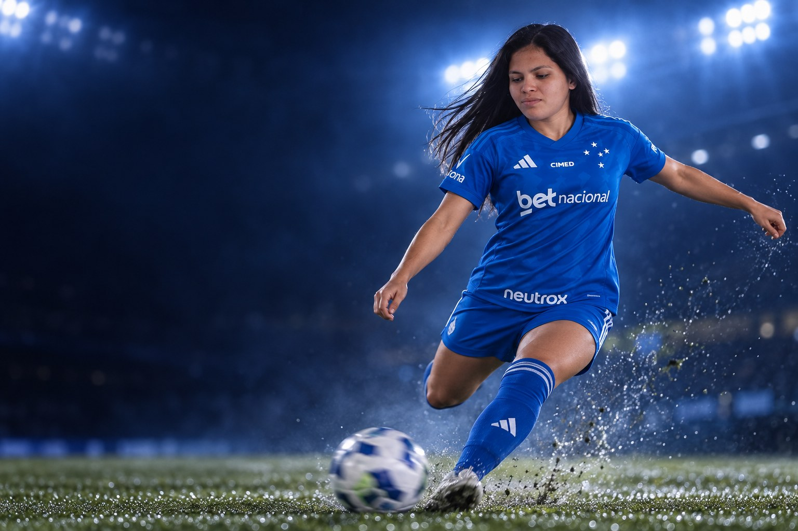
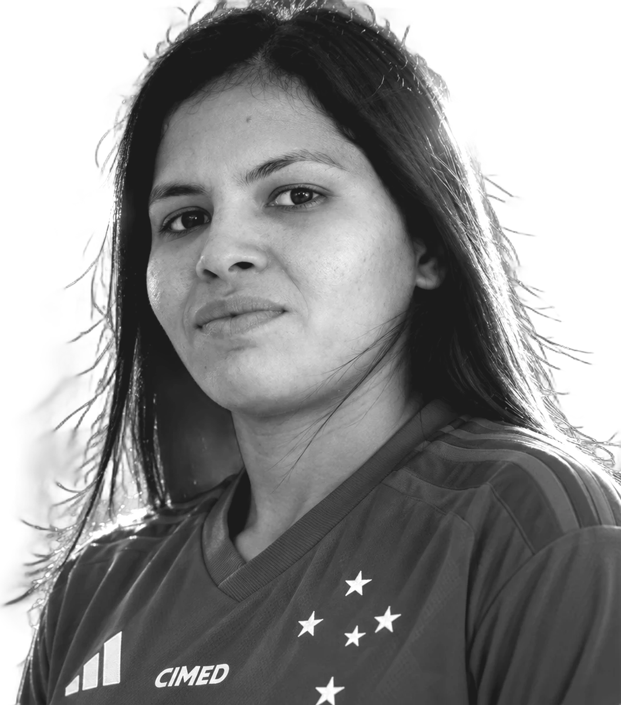
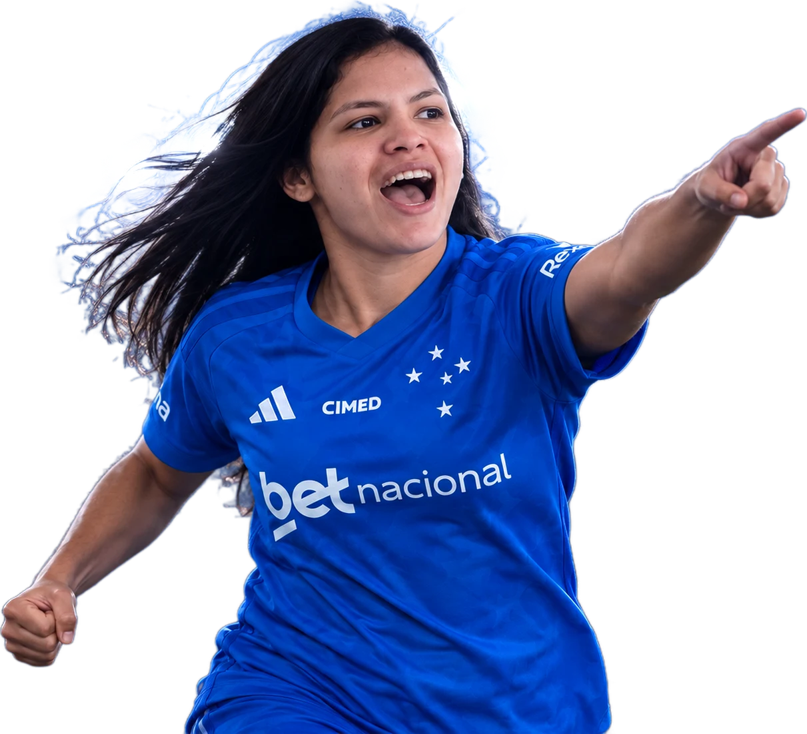
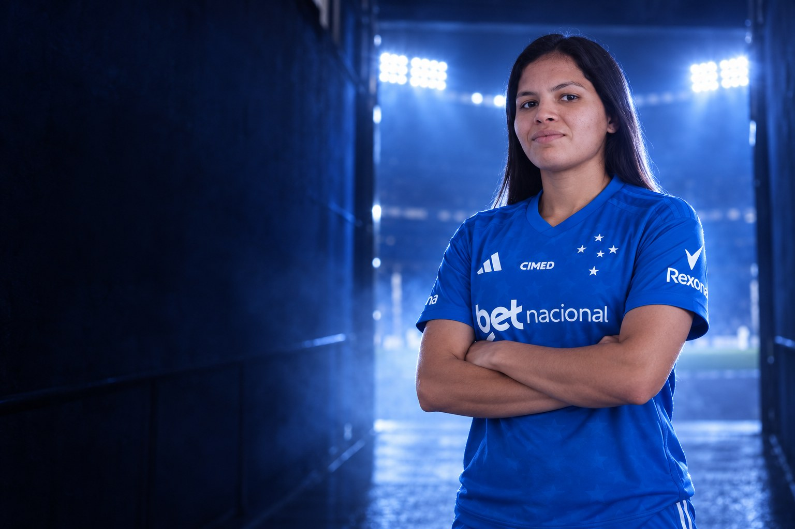
Sobre
Radija Castro Leão é futebolista profissional e atua como ponta direita e ponta esquerda. Clube atual: Cruzeiro.
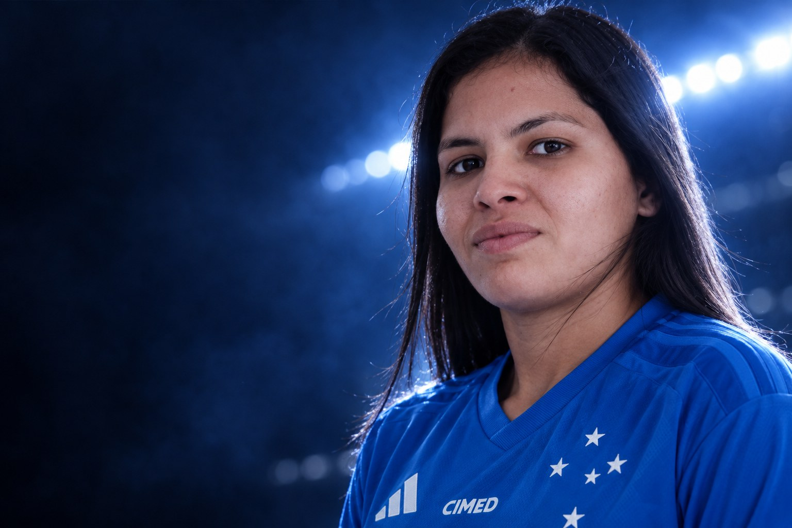
“Sempre foi um grande sonho vestir a camisa da ferroviária, desde pequena eu sonhei com esse momento. Estou muito feliz de estar aqui.”Radija, Na chegada à Ferroviária, em agosto de 2022
Perfil
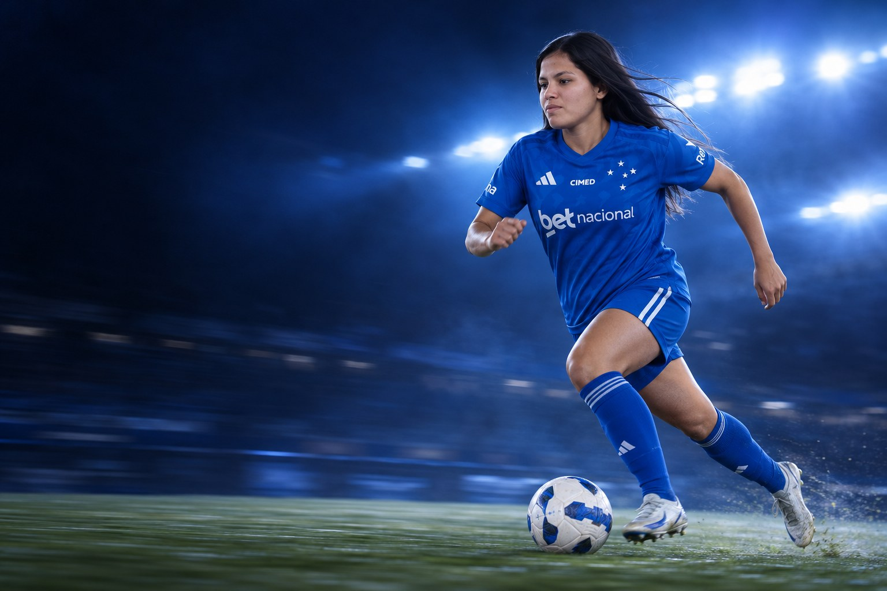
Carreira em números
Carreira
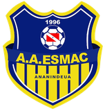
2022ESMACClubes em destaque
5 jogos · 1 gols
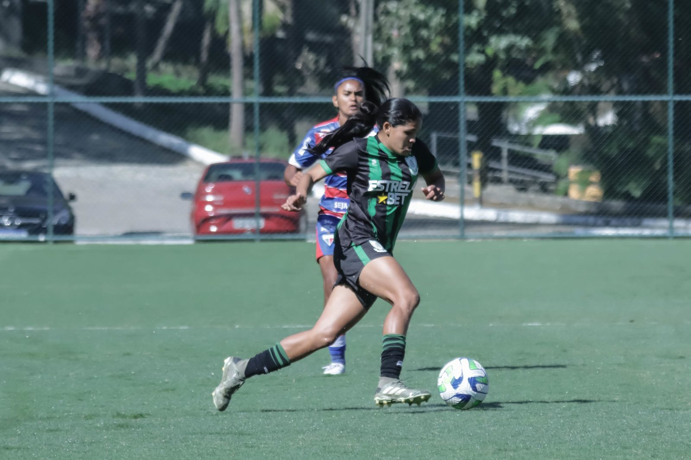

57 jogos · 17 gols
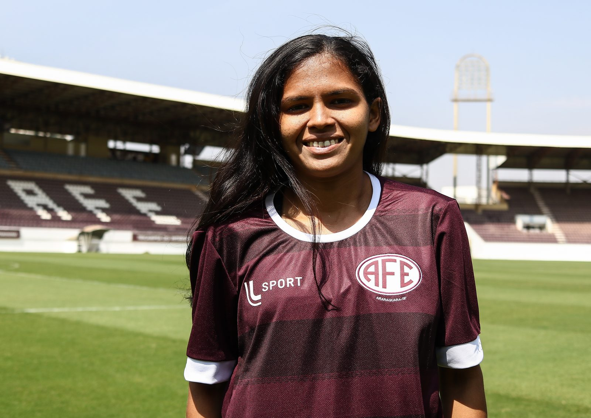

2 jogos · 0 gols
Conquistas
Galeria
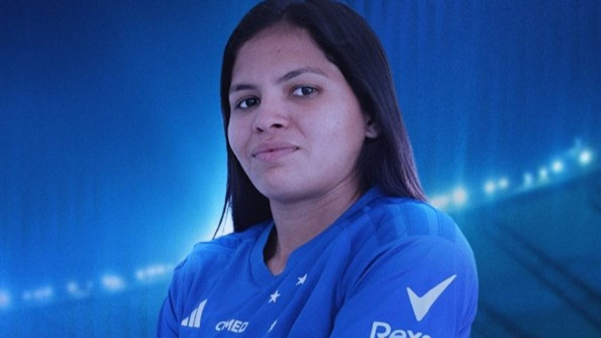
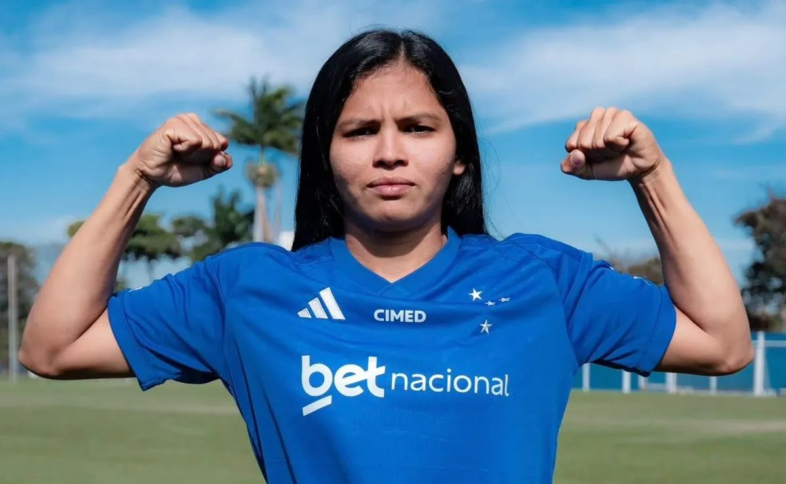
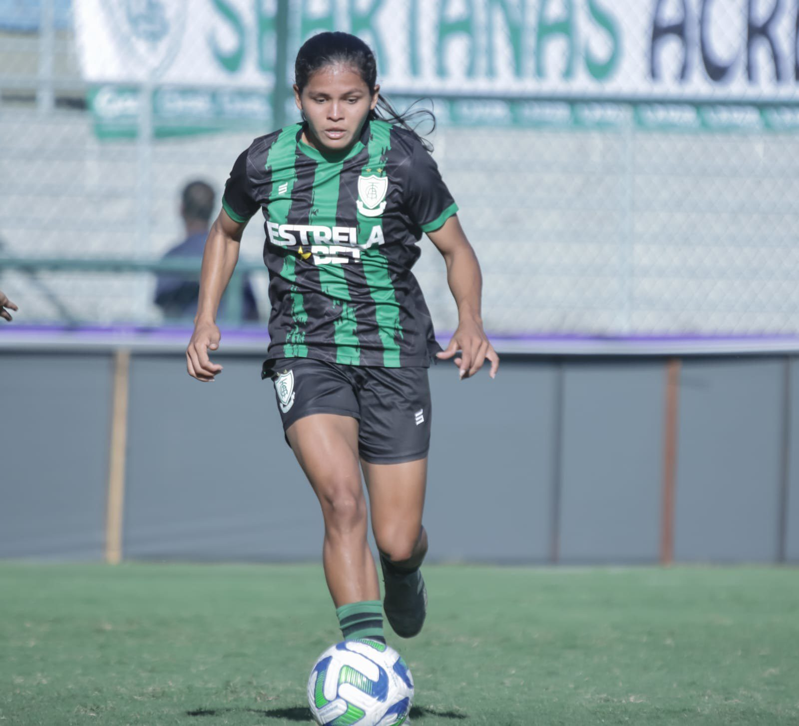
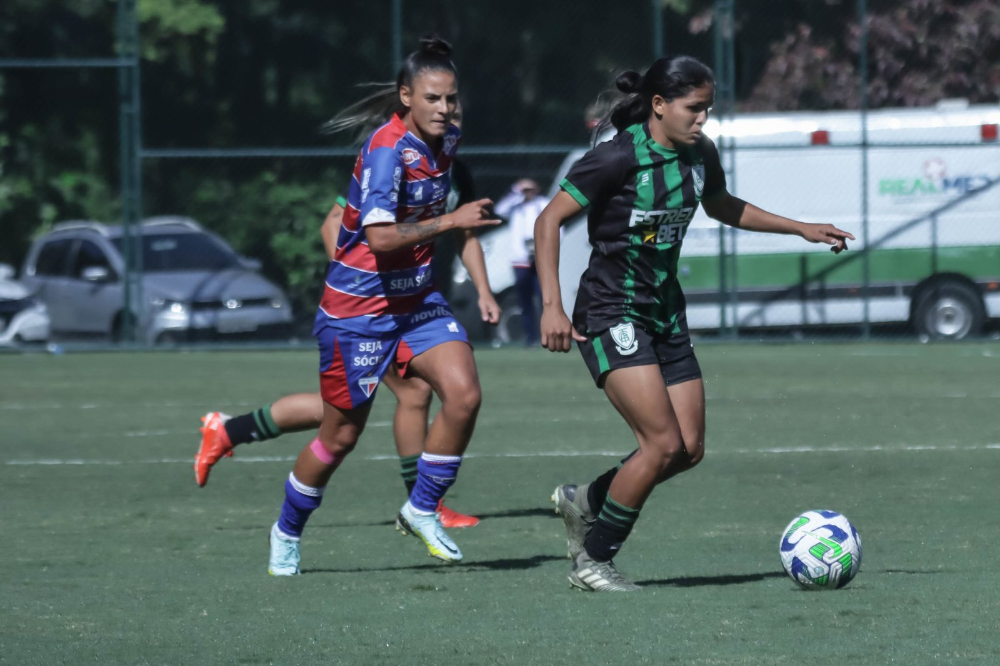
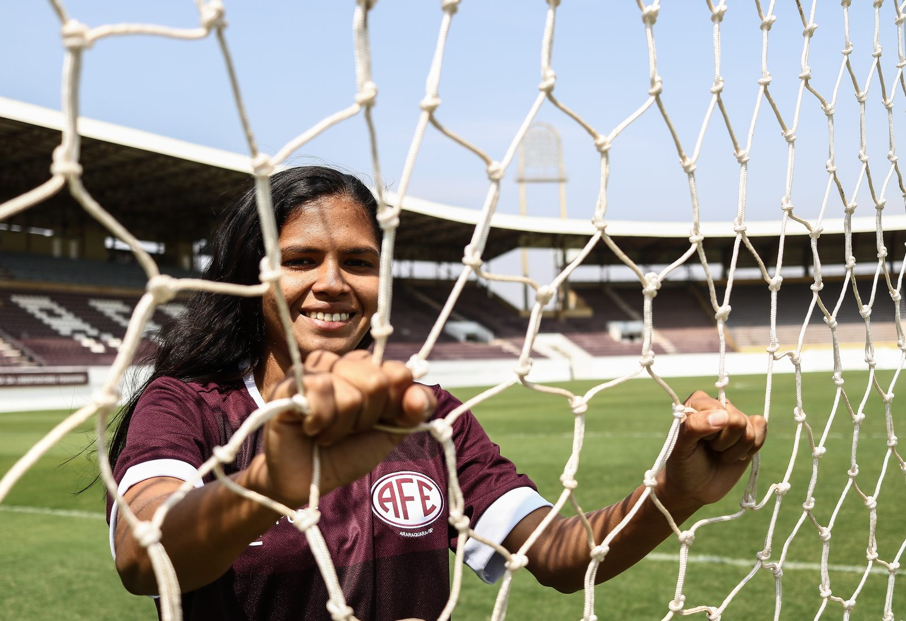
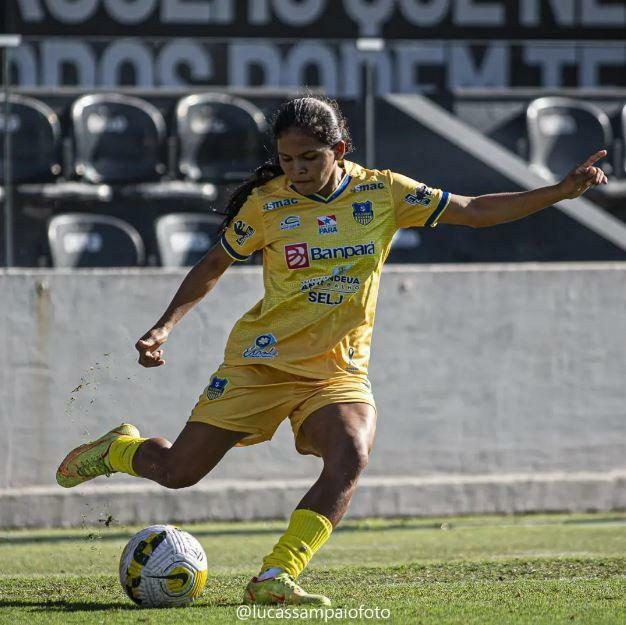
Currículo esportivo
| Temporada | Clube | País | Jogos | Gols | Assistências |
|---|---|---|---|---|---|
| 2026 | 5 | 1 | 0 | ||
| 2026 | – | – | – | ||
| 2025 | 15 | 1 | 0 | ||
| 2024 | 24 | 3 | 1 | ||
| 2023 | 18 | 13 | 0 | ||
| 2023 | – | – | – | ||
| 2022 | 2 | 0 | 0 | ||
| 2022 | ESMAC Sub-20 | 6 | 2 | 0 | |
| 2022 | ESMAC | 16 | 0 | 0 | |
| 2018 | 4 | 0 | 0 |
Jogos, gols e assistências conforme a base estatística Ogol. O clube atual segue o anúncio oficial do clube.
Na mídia
Contato profissional
Assuntos profissionais, comerciais e de carreira: fale com a X Soccer, que faz a gestão da carreira da atleta.
Mídia kit
International profile